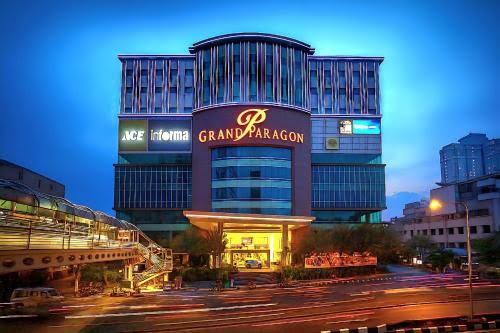

GRAND PARAGON
Paragon Restaurant

The Paragon Restaurant in Kozhikode (Calicut) is a legendary, historic restaurant and culinary landmark rather than a lodging hotel
Founded: 1939 by Govindan Panhikeyil in Calicut.
• Leadership: Headed by Chairman and CEO Sumesh Govind.
• Cuisine: Renowned for authentic Malabar, Moplah, and coastal Kerala seafood traditions.
• Recognition: Ranked globally among the world most iconic legacy restaurants by culinary platforms like TasteAtlas.
Prawns, Fish Mango Curry, Karimeen Polichattu, and Prawn Mango Curry
•